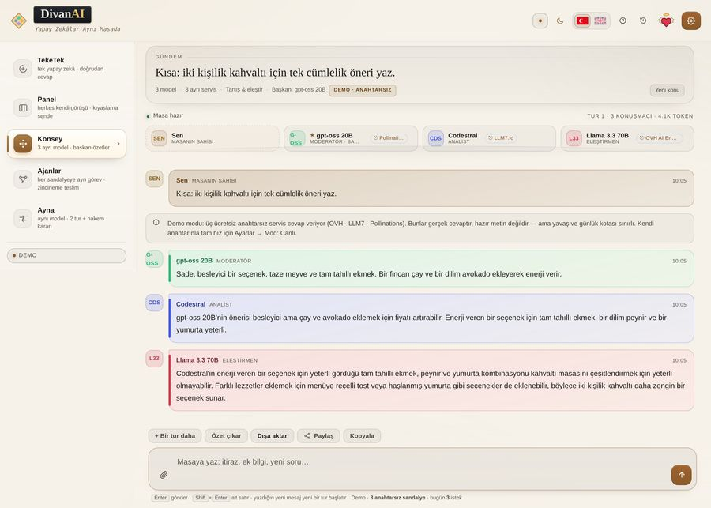

Make several AIs argue the same question
In the Council table a topic goes round the table: each seat reads what came before, says where it disagrees, and the chair turns the whole exchange into one summary.

Why a debate instead of one answer
A single model accepts the frame of your question. The second and third seats question that frame. In practice this matters in three places: a decision with two sides, a plan that needs its weak point found, and a text that has to survive review.
How a round runs
- You write one topic — one sentence is enough.
- Seat one answers. Seat two reads it and pushes back. Seat three adds or corrects.
- The chair collects what was agreed, where the table split, and the first step.
You choose who sits where: assign a model per seat, close a seat, or change roles (moderator, analyst, critic, engineer). If two seats end up on the same model the app warns you — the debate gets weaker.
Free to try
No key needed: three keyless services answer (Pollinations · LLM7 · OVH). They are real models and they can be slow. For speed, add a free key from Google AI Studio, Groq, Z.ai or OpenRouter.
Frequently asked questions
Is it free?
Yes. No account, no card; the app itself costs nothing.
How many seats?
Three in demo mode, four in live mode, five with DeepSeek.
Does it keep my conversation?
It stays in your browser. There is no server of ours to store it.